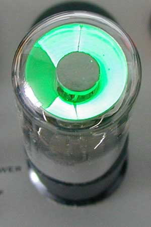

No, purtroppo le femmine non c'entrano con il discorso che andrò a fare.
Tante di loro hanno gli occhi magici, ma nel mio caso si tratta di occhi ben più prosaici: solo rozze valvole termoioniche. Intendiamoci... rozze solo in paragone alle ragazze!
In realtà le valvole hanno una loro intrinseca finezza, eleganza e fascino che le rende dispositivi "femmine" a tutti gli effetti.
Quindi l'accostamento lo ritengo accettabilmente corretto e lo tengo senza remore.
Spesso mi riaggancio ai post precedenti, e lo faccio anche stavolta, tornando a quel vecchio piaccametro (che dico vecchio... allora era nuovo!) che si trovava nel lab di chimica-fisica della mia scuola.
Dicevo che quello strumento aveva come indicatore non un milliamperometro ma un "occhio magico", costituito da una vecchia valvola radio, la 6E5.
Ora non ho più idea del funzionamento di quello specifico strumento della Beckman, ma ricordo che si doveva regolare una manopola al fine di ottenere la massima chiusura dell'"l'occhio verde".
Ma finalmente cos'è un occhio magico?
E' una particolare valvola termoionica, detta più propriamente "indicatrice di sintonia", usata nelle radio a valvole degli anni d'oro per facilitare la sintonizzazione corretta delle emittenti.
La valvola presenta alla sommità (o di lato) una placchetta di varie forme rivestita di sostanze (in genere solfuro di zinco attivato con Cu, Ag) che emettono una bella luminescenza verde se colpite da elettroni; a loro volta gli elettroni possono essere deviati più o meno da un campo elettrico in modo da colpire la placchetta in tutto o in parte.
Se la placchetta è colpita tutta si illumina completamente, altrimenti rimangono delle zone d'ombra più scure.
Siccome le prime indicatrici di sintonia avevano la placchetta di forma circolare con al centro un bottoncino scuro (il catodo emettitore di elettroni ed un elettrodo di comando) il tutto assomigliava ad un occhio, con l'iride verde e la pupilla nera.
Ecco perchè queste valvole si son sempre dette occhi magici.
L'aggettivo magico è facilmente spiegato perchè a quei tempi (siamo negli anni '30), tutto il funzionamento di una radio era quasi magia (per tanti lo è ancora anche negli anni duemila...).
Una immagine vale come al solito più di tante parole:


ecco come si presenta la valvola 6E5 e a fianco la vista della sommità illuminata, con ancora un settore d'ombra che si potrebbe restringere o allargare.
Appropriato il nome "occhio", vero?
Lo zoccolo della valvola è di tipo vecchio (anni '30) a 6 piedini, ma ne esiste anche una versione più moderna (anni '40) a otto piedini (in questo caso è detto "octal").
- pin 1: non collegato
- pin 2: un capo del filamento riscaldatore
- pin 3: la placca del triodo amplificatore e l'elettrodo di controllo
- pin 4: non collegato
- pin 5: la griglia del triodo amplificatore
- pin 6: la placca luminescente al solfuro di zinco
- pin 7: l'altro capo del filamento riscaldatore
- pin 8: il catodo emettitore di elettroni
Come funziona, in due parole, la 6E5?
A- il filamento si arroventa quando alimentato con una tensione di 6,3 volt
B- il catodo a contatto del filamento si riscalda ed emette elettroni
C- gli elettroni sono attirati dalla placca luminescente (pin n.6) perchè è tenuta a forte potenziale positivo
D- il segnale da visualizzare entra sulla griglia (pin n.5)
E- il segnale è amplificato e produce una variazione di tensione sulla placca (pin n.3), anch'essa positiva
F- questa variazione di tensione comanda la placchetta deviatrice di elettroni (ancora pin n.3)
G- se gli elettroni sono poco deviati dalla placchetta deviatrice l'occhio si chiude, se sono molto deviati l'occhio si apre
Quindi:
- segnale intenso (oppure buona sintonia della radio) --> occhio chiuso, tutto verde
- segnale debole (o cattiva sintonia della radio) --> occhio aperto (ombra larga)
Sono stato il più sintetico possibile perchè l'intendimento era di essere comprensibile soprattutto ai non addetti ai lavori; spero di esserci riuscito.
Queste valvole indicatrici sono nate negli anni '30 e sono state usate fino agli anni '60, con molte sigle e forme diverse (EM1, 6G5, WE18, EM34, UM80, EM84, DM71, ecc.) e con impieghi non solo strettamente radiofonici ma anche nel campo audio (e perfino chimico!), prima dell'avvento dei semiconduttori e della tecnologia attuale a LED.
Ancora oggi sopravvivono e si trovano facilmente su e-bay, sull'onda di una moda (e quando è solo moda è molto spesso insulsa) che vede nelle belle valvole accese, calde e luminose, quel tocco di esoterismo che i freddi (ma molto più efficienti) transistors non possono dare.